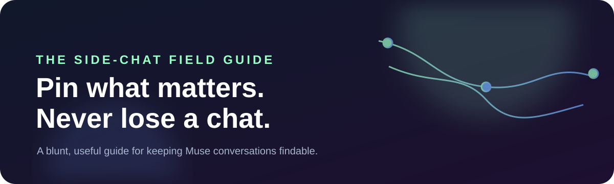
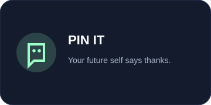
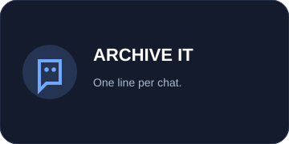
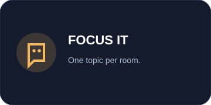
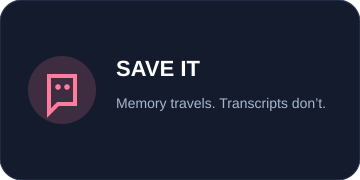

01 · New user
Make one room per topic.
Keep the main chat clean. Let a side chat carry one whole thread.
Learn the basics →A direct guide to how Muse side chats work — and the gloriously boring system that keeps your best thinking findable.
Start where the problem is. The tiers are not a test. They are three different amounts of “I have lost a useful conversation and I am done with that.”
Keep the main chat clean. Let a side chat carry one whole thread.
Learn the basics →Create one pinned “Summarized Side Chats” chat. Give every conversation a line.
Fix the mess →Shared memory and deliberate carrying. Not automatic transcript telepathy.
Get precise →
The tiny campaign kit is part of the site so the idea can travel: use the banners, badges, comic, and animated pin in posts, README files, or a launch page.



